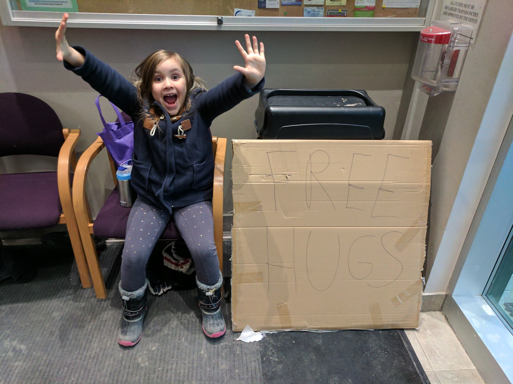
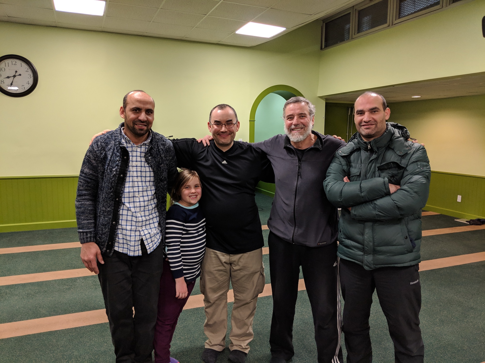
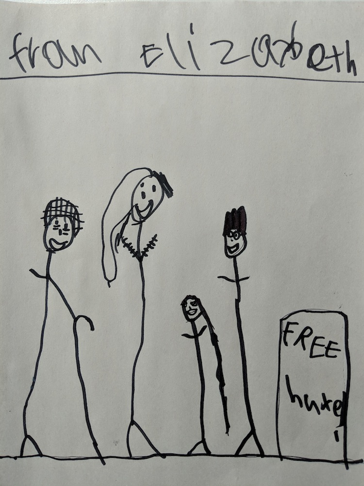
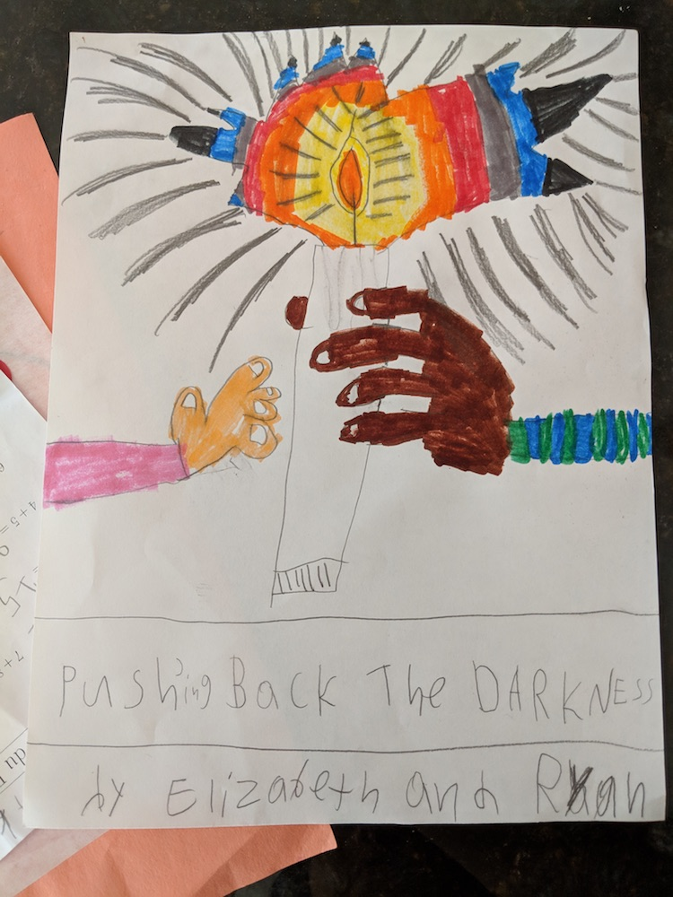

PUSH BACK THE DARKNESS
Free Hugs
My name is Ryan Slobojan, and I live in Pickering, Ontario (and was born in Thunder Bay, Ontario). My wife's name is Olga, and she was born in Poland and immigrated to Canada in 1993 as a child. We have three children - Elizabeth (7), Daniel (4), and Susannah (1).
When I first heard about the attack on the mosque in Quebec City, I was devastated. There had been a rising tide of intolerance and hate in many places in the world over the preceding few years, but I felt a certain sense of complacency and contentment about the situation in Canada because it seemed that those dark ideas were much less common here. That illusion was shattered as I followed the news on that cold Sunday evening, and learned that 6 people had been murdered, here in Canada, in a hate crime targeted at a particular religious group. That evening, I realized I had to do something - "thoughts and prayers" were not enough, it was time for meaningful actions.
The next afternoon, when my daughter Elizabeth (then 5) got off her school bus around 3pm, we wrote "FREE HUGS" on a large piece of cardboard and went to the local mosque for the first time. To say I was nervous was an understatement - I had never been to a mosque before in my life, and I had absolutely no idea what to expect. I was also very concerned that, since this was less than 24 hours after the shootings in Quebec City had happened, that I might scare people by my sudden first-time appearance there. Compounding the whole situation, this very mosque had previously had a window shot out two years earlier - I was worried that things might go very badly very quickly, but I knew that I had to overcome my fear of the unknown and hope for the best if I wanted to take a real step to try to do something to improve things.
We had originally planned to stand outside the main doors and give out hugs, but we were very quickly invited inside where it was much warmer (since it was January 30th). That day, we met (and hugged) well over a hundred people - it was one of the most incredible and heartwarming experiences of my life, and Elizabeth had an excellent time giving out hug after hug to people who would burst out in huge smiles when they saw us at the door with our sign. Many people told us of how grateful they were to see us and how much it had brightened their day (some with tears in their eyes), and I began to understand how much stronger the fear and panic would have been for me if I had myself been a member of the group targeted in the Quebec City shootings.

A fundamental part of the Canadian identity, for everyone who is not Indigenous, is that we all came from somewhere else. My ancestors came from many parts of Europe; yours may have also, or they may have come from elsewhere on the planet. We all arrived here, in a country with a populace made almost entirely of immigrants, to find freedom, peace, and opportunity. We must make sure to help and support each other when we are in need, and we must offer that support via actions, not just via words. Just as each community has physical infrastructure like roads, utilities, and parks, each community also has a social infrastructure which consists of the relationships and interactions we have with one another. And, just as roads do not build themselves, we as community members must put effort into building the social fabric of the community to reflect the shared, diverse, and welcoming environment we want to live in.
As a Member of Parliament or Senator, you have the additional burden of having been chosen to represent many tens of thousands of Canadians in Ottawa - this means that many people look up to you as a role model for how they should act, and means that you have a disproportionate ability, through your words and actions, to guide our communities in different directions.
Looking back to the Quebec City mosque attack and the motivations of the perpetrator of that attack, Alexandre Bissonnette, he has stated clearly and consistently that he supported the policies of Donald Trump and attacked the mosque due to fear of immigrants and Muslims. Rhetoric which follows the patterns set by Donald Trump ("Make X Great Again", in-depth and disproportionate focus on the crimes of immigrants, specific fear-mongering around anything related to Muslims) and by other authoritarian leaders before him in the last hundred years has very corrosive effects upon the fabric of society and leads people to do horrible things to their neighbours out of hatred and fear. This is not a statement of opinion - this is a historically verifiable fact which is backed up by much research and experience in the last century.
I
visited the mosque which was targeted by this attack (le Centre Culturel Islamique de Québec) and gave out free hugs (câlins gratuits) with my daughter shortly before this story was published, on January 18th 2019. Despite being strangers, visiting a mosque which had been the target of one of the worst terrorist attacks in Canadian history by a stranger two years earlier, we were welcomed very warmly and were shown an incredible amount of kindness including free food and free rides back to the hotel we were staying at. Just as with our first visit to the Pickering mosque the day after the attack on this Quebec City mosque two years earlier, we gained many more friends than we had before we arrived, and had an absolutely amazing experience which will remain with us for the rest of our lives. The willingness of those who have been so frequently targeted over the last several years to continue to open their hearts and warmly welcome strangers is an example which all of us must strive to follow.

There are many things which can be focused upon in your messages and debates such as questions of policy, taxation, economic focus, and a dozen other areas - elections can easily be won and lost on these topics. My hope is that you will help to spread a message of optimism, tolerance, and friendship amongst all Canadians while continuing to have these vigorous and necessary debates so that our country is a better place for all of our children than it was for us. If there is anything at all that I can do to help with spreading that message of optimism, please let me know and I will gladly do so. Sometimes, the most difficult part of helping is figuring out what exactly one can do to help - please let me (and others) know, so we can work together to make it happen.
--
Ryan Slobojan
Pickering, ON
Founder, Push Back The Darkness initiative
Drawings from Elizabeth Slobojan, 7 years old

